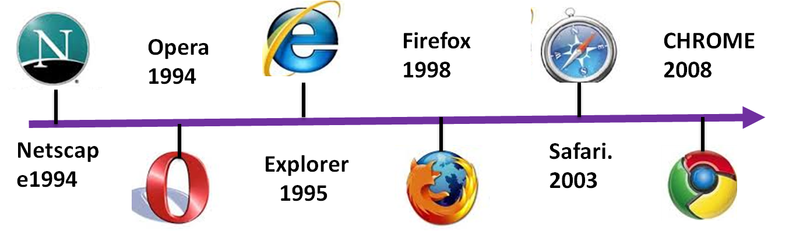

El Internet fue creado en el año 1969, actualmente tiene ya 50 años en el mercado y desde entonces ha ido presentados constantemente evoluciones para ir ofreciéndole a sus más de 6 billones de usuarios el mejor servicio posible estando siempre actualizado. La primera conexión se dio entre los ordenadores UCLA y Stanford. Desde entonces comenzó a presentar una evolución muy importante año tras año llegando a convertirse en una herramienta prioritaria para todas las personas, especialmente estos últimos años.
Desde el nacimiento del Internet ha ido presentando varias fases. Una de las más importantes fue su incorporación a los nuevos dispositivos tecnológicos como lo ha sido los Smartphone, Tablet, consolas, entre otros. De acuerdo a todo este crecimiento comenzaron a aparecer lo que era los primeros emails, así como los navegadores quienes hoy en día son una de las herramientas más importantes para poder navegar en la web. De tal manera, que aquí te enseñaremos un poco sobre la historia de estos software que hoy en día son tan importantes.
PUBLICIDAD
¿Cuándo se creó el navegador y cuál fue el primero? Origen e historia
Los browser como también se les conoce se han convertido en unos de los software más utilizados desde su nacimiento, se puede decir que de todos los programas que se puedan instalar en un ordenador estos serán siempre los que más se utilicen. Esto se debe a que ellos son capaces de cubrir tus necesidades, ya sea para buscar una información, para el entretenimiento en las diversas redes sociales, entre otras.
PUBLICIDAD
Desde el nacimiento del Internet, tuvieron que pasar alrededor de 21 años para que se creara lo que sería el primer navegador web (Worldwideweb). Sin embargo, sería hasta 1993 cuando se creó Mosaic que se convertiría en una herramienta popular, desde entonces, fueron naciendo nuevos software de este tipo cada cierto año.
Hoy en día existe una gran cantidad de browser disponibles en el mercado, cada uno de ellos cuentas con herramientas diferentes para sus usuarios pero todos cumplen la misma función pero, como toda aplicación, algunos de ellos se ajustaran mejor a tus necesidades.
De tal manera que aquí te enseñamos un poco sobre cómo ha sido la evolución de estos programas con el paso del tiempo y cuál ha sido la importancia de cada uno de ellos:
World Wide Web 1990
Worldwideweb 1990
En el año 1990 se crearía el primer browser llamado Worldwideweb por Tim Berners-Lee, quien fue también el creador de la WWW. (World Wide Web). Sin embargo, Worldwideweb no era considerado como un navegador por todos los usuarios a pesar que contaba con una plataforma que lo identificaba como uno de estos programas.
Al poco tiempo de su lanzamiento al mercado sufriría un cambio de nombre, este pasaría a llamarse Nexus, el objetivo de esto era seguir evitando las confusiones con WWW que existían en dicho momento. Pero, pese a todo esto, nunca llegó a conseguir la popularidad necesaria para ser reconocido ante el mundo como el primer navegador web de la historia, aunque si somos estrictos Worldwideweb fue el primero en ser creado.
NCSA Mosaic 1993-1998
NCSA Mosaic 1993-1998
Por lo general, muchas personas piensan que Mosaic fue el primer browser de la historia, esto se debe a su gran popularidad alcanzada poco después de su lanzamiento. Mosaic fue creado por Marc Andreessen y Eric Bina del National Center for Supercomputing Applications (NCSA).
Era un programa pago y privado que logró alcanzar el 100% de la cuota del mercado a tan solo 1 año de su lanzamiento, algo que lo llevó a convertirse en una de las aplicaciones más populares en su momento. Sin embargo, después de 1994 fue perdiendo usuarios de forma exponencial y 5 años más tarde de su nacimiento llegaría a desaparecer por completo en el mercado.
Netscape 1994-1997
Netscape 1994-1997
Netscape se convirtió en el navegador más usado en la época de los 90. Su llegada adelantó el rápido final de Mosaic y desde su nacimiento en 1994 hasta 1997 se convirtió en el browser más popular. Una de sus principales características fue por ofrecer multiplataforma como un programa gratuito y en 1995 alcanzó una cuota de un 95%.
Constantemente la aplicación presentaba nuevas versiones a sus usuarios permitiéndole así experimentar funciones mucho más complejas. También se caracterizó por ser un software comercial. Pero, al poco tiempo de su llegada comenzó a experimentar una fuerte disputa por el lanzamiento de Windows 95 y lo que sería la primera versión del navegador de Microsoft, Internet Explorer. Una plataforma mucho más moderna y fácil de utilizar, lo que hizo que Netscape fuera perdiendo toda la popularidad alcanzaba y saliendo así del mercado.
Internet Explorer 1995
Internet Explore 1995
Este software fue presentado en agosto de 1995 y se basó principalmente en Mosaic. La creación de este programa se dio por el gran éxito que estaba consiguiendo Netscape y toda la popularidad lograda en el mercado. Debido a esto Microsoft lanzó a Internet Explorer 1 y logró hacerse como número 1 del mercado web.
Explore consiguió un gran éxito en los años después de su gran lanzamiento y su éxito logró posicionarse por 10 años como número 1 donde mantenía una cuota de mercado alrededor del 90%. Actualmente muchos usuarios siguen usando este browser.
Como vino ocurriendo con las aplicaciones anteriores, la creación de nuevos programas y las apariciones en el mercado fueron haciendo que este gran líder del mundo web por 10 años fuera perdiendo su popularidad poco a poco.
Mozilla Firefox 2002
Mozilla Firefox 2002
Firefox sale al mercado en el año 2002, justo cuando Internet Explorer se encontraba en su mejor momento. Sin embargo, la aparición de este nuevo programa haría que Explore comenzará a perder su popularidad mientras ellos conseguían una cuota más que importante en el mercado.
Mozilla en ese entonces se convertía en un software mucho más moderno que el de Microsoft, una plataforma actualizada, segura, compatible con todos los estándares de la web existente y de código abierto.
Pero, pese a todo esto, se piensa que Mozilla Firefox nunca logró derrotar por completo a Internet Explorer, sino que siempre estuvieron igualados, pero cada uno ofreciendo características distintas a cada uno de sus usuarios.
Opera 2002
Opera 2002
Comenzó en el año 1995 como un proyecto para investigaciones por parte de una empresa de telecomunicación de Noruega, lo que sería su primera versión. Su segunda versión fue publicada en el año 1996, desde entonces su crecimiento comenzó y en 1997 salía a versión 3.0 la cual agregaba en su sistema las ventanas emergentes. Para 1998, llegaría el gran lanzamiento como el primer navegador para los dispositivos móviles. Y para el año 2000 Opera lanzaba la navegación por pestañas.
Fue así como en el 2002 aparece nuevamente Opera renovado y con nuevas funciones para sus usuarios y junto a Mozilla Firefox se convirtió en las principales alternativas para Microsoft. Pero, es importante mencionar que Opera nunca llegó a igualar el éxito de Mozilla ni Internet Explorer, sino que siempre se mantuvo por debajo.
¿Cómo activar y desactivar el modo invitado en Google Chrome? Guía paso a paso
Con el paso de los años fue perdiendo usuarios y en estos últimos años tuvo la necesidad de renovarse por completo debido a que estaba siendo prácticamente anulado en el mercado web. De tal manera que se vieron obligado a adoptar el motor Chromium y se han convertido en un software derivado de Google Chrome.
Safari 2003
Safari 2003
Safari es conocido por todos como el navegador principal del sistema operativo Mac y su gran lanzamiento fue en el año 2003. Este software utiliza el motor de renderizado Webkit, el cual ha sido desarrollado por Apple a partir del motor de renderizado KHTML.
Ha tenido un muy buen éxito en los dispositivos de iOS, tanto para los iPhone e iPad. Pero es importante mencionar que el uso de Safari está limitado solo para los Apple. Para los años 2007 y 2012 se intentaron crear versiones de Safari para que estuviera disponible para Windows sin embargo estas no tuvieron ningún éxito quedando fuera del mercado rápidamente.
Después del 2015, Safari ha comenzado a presentar nuevas versiones cada 6 meses en su sistema operativo, ofreciéndole así un programa completamente actualizado a cada uno de sus usuarios.
Google Chrome 2008
Google Chrome 2008
Mientras todos los demás programas seguían compitiendo por posicionarse en el mercado, Google estaba trabajando en su propio navegador web. Fue así como para el 2008 haría el lanzamiento de Google Chrome, quien al poco tiempo de haber salido al mercado conseguiría un gran éxito posicionándose así como uno de los mejores actualmente.
En la actualidad Chrome se ha convertido en el programa más usado en todo el mundo, consiguiendo hasta una cuota superior al 50% con respecto a Mozilla Firefox e Internet Explorer.
Evolución histórica del uso de navegadores desde 1996 hasta 2019
Reproductor de vídeo
00:00
01:39
Uso de los navegadores de Internet (1996-2019)
Tipos de navegadores
Hoy en día existen muchas aplicaciones de este tipo, las cuales son las que te van a ayudar a poder transitar a través de la red, con ellas podrás acceder a las distintas web, redes sociales, buscar informaciones, entre muchas otras tareas que se podrán realizar.
El uso de cada uno de ellos va a depender básicamente del usuario y sus necesidades. Cada aplicación cuenta con una plataforma y herramientas diferentes, algunas más fáciles de trabajar que otras. Debido a esto aquí te vamos a enseñar cada uno de los exploradores que existen actualmente así como sus diversas funciones, para que puedas elegir aquel que se adapte mucho más a tus necesidades.
Google Chrome
Google Chrome
Hoy en día es el explorador más usado en todo el mundo, esto se debe a que presenta una mayor velocidad que todo el resto de App de este tipo. En cuanto a su plataforma es muy agradable y fácil de manejar, te permite activar corrección de ortografía, crear páginas favoritas, abrir ventanas incógnitas entre muchas otras funciones.
Se puede abrir fácilmente desde el escritorio y por lo general suele cargar las distintas páginas de una forma muy rápida y se ha caracterizado por ejecutar aplicaciones web complejas a muy buena velocidad.
Este explorador de Google siempre está al tanto de las últimas mejoras y novedades pero, quizás uno de sus mayores inconvenientes es que pertenece a una de las empresas multinacionales más influyentes del mundo, donde su único objetivo es el ánimo de lucro. Por lo tanto, muchos usuarios no suelen sentirse tan cómodos al usar este tipo de plataforma sobretodo dejando sus datos personales en ella.
Pero, pese a todo esto su plataforma brinda mucha seguridad en la web, cuenta con actualizaciones constantemente para poder brindarle a cada uno de sus usuarios mejores beneficios. Además, no solo es el software más usado en los ordenadores, sino también en los dispositivos móviles como los Android e iOS y las Tablet.
Mozilla Firefox
Mozilla Firefox
Este programa se ha convertido en uno de los más confiables para la mayoría de los usuarios. Sin embargo, si comparamos su interfaz con la de Google Chrome seguramente Firefox se queda un poco corta, ya que suele ser un poco más lenta y con un aspecto más antiguo pero, está ubicado por detrás de Chrome.
Mozilla es considerado como un explorador bastante sólido, estable y lo mejor de todo es que no presenta casi errores. Una de sus principales características es que suele ser un programa independiente y sin ánimo de lucro.
A lo largo de los años desde su lanzamiento ha sido desarrollado por una gran cantidad de programadores que se encargan de mantenerla actualizada para así poder brindarles el mejor servicio a cada uno de sus usuarios.
Otras de las ventajas de Mozilla Firefox es que es personalizable, cuenta con una gran cantidad de temas y complementos para que tú mismo te encargues de darle el aspecto que quieres. Además, cuenta con un gran número de extensiones que resultan muy útiles para realizar diversas funciones.
Opera
Opera
Opera se ha convertido en uno de los navegadores más utilizados por los dispositivos móviles y además es uno de los más antiguos. Al igual que Mozilla no tiene ánimos de lucro.
PUBLICIDAD
Más en NAVEGADORES
¿Cómo cambiar la imagen de fondo de Google Chrome y personalizar mi navegador? Guía paso a paso
¿Cuáles son los mejores navegadores para explorar la Deep Web y la Dark Web de forma segura y privada? Lista 2023
¿Cuales son los mejores complementos, extensiones y addons para Mozilla Firefox? Lista 2023
¿Cómo borrar la memoria caché de Google Chrome para optimizar la velocidad de navegación? Guía paso a paso
¿Cómo importar tus marcadores de Mozilla Firefox a Google Chrome para conservar tus favoritos? Guía paso a paso
SÍGUENOS EN 👉 YOUTUBE TV
Actualmente está ya la versión de Opera 15 y usa el mismo motor que Google Chrome. Por lo tanto, en Opera vas a poder utilizar las mismas extensiones disponible para Chrome, haciéndolo así mucho más interesante. Una de sus principales características de hoy en día es que presenta una novedad que se llama “Estante” o también conocido como “Favoritos” en exploradores como Firefox y Chrome, lo que te permitirá guardar las páginas web que te parezcan interesantes para que las puedas ver posteriormente.
También se caracteriza por ser muy personalizable, lo que te permitirá crear un aspecto a tu medida y gracias a todas sus actualizaciones no tiene mucho que envidiarle a Google Chrome y Mozilla Firefox.
Safari
Safari
Como todos sabemos Safari está completamente relacionado al Mac de Apple. Actualmente es el cuarto navegador más utilizado en Internet, pero su crecimiento ha sido muy lento en comparación a otros navegadores. Una de las principales razones es que su versión para los ordenadores no tiene muchas cosas que destacar, suele ser muy básica y poco interesante con muy pocas actualizaciones.
Pero todo esto cambia cuando nos referimos a la versión de Safari para los Smartphone, en este caso el explorador se destaca en muchos aspectos, presenta un muy buen rendimiento y gran seguridad siendo así el preferido por la mayoría de los usuarios.
En su versión móvil destacan cosas interesantes, unas de ellas es el modo “Lector” donde el texto que se desea leer pasa a mostrarse como destacado lo cual te facilitará la lectura. Pero, como todo lo bueno tiene algo malo, unas de las contras de Safari es que no suele tener mucha velocidad, pero si es estable y eficiente.
Microsoft Edge
Microsoft Edge
Pese a todas las mejoras que Microsoft Edge ha ido implementando en su plataforma aún sigue sin poder darles la pelea a navegadores como Chrome o Firefox, siendo estos los dos más destacados del momento.
Sin embargo, muchos de los usuarios consideran que Edge será el navegador del futuro, pues en los últimos años se ha ido convirtiendo en uno de los referentes a la innovación y la tecnología. Este programa fue creado con la intención de sustituir al antiguo Internet Explorer, consiguiendo así una versión mejorada y algo reinventada en cuando a los otros exploradores disponibles hoy en día.
A pesar que Microsoft Edge se ha convertido en el explorar predeterminado de Windows 10 sigue sin convencer del todo a sus usuarios, y esto se debe a varias razones, y es que a pesar de ser una versión mejorada y bastante sofisticada aún sigue presentando algunas limitaciones en cuanto a Chrome y Firefox, algunas de ellas es que sigue siendo mucho más lento, cuenta con un menú muy limitado, ausencias de extensiones y la personalización es casi inexistente.
¿Cómo borrar el historial de navegación de Chrome? Guía paso a paso
Maxthon
Maxthon
Maxthon es actualmente uno de los navegadores más rápido de todo el mercado, presenta características que fácilmente lo pueden ubicar junto a navegadores como Google Chrome y Mozilla Firefox. Este programa es ideal para todos aquellos usuarios que son amantes del diseño de Internet Explorer.
En cuanto a su plataforma se puede decir que es bastante básica pero funciona sin problemas y una de sus principales características es que es compatible con todos los sistemas operativos, incluyendo también los sistemas operativos de Android y iOS.
Entre sus funciones destacan la navegación por pestaña, marcadores, extensiones, entre muchas otras. Un aspecto de Maxthon es que cuenta con sus propias herramientas lo cual lo diferencia de los demás programas de este tipo.
Vivaldi
Vivaldi
Este ha sido uno de los navegadores más recientes en el mercado y ha sido creado por los mismos autores de Opera, este nuevo programa ha sido diseñado especialmente para aquellos usuarios expertos y tiene todo para convertirse en uno de los exploradores más rápidos, altamente flexible, con un gran número de herramientas y que coloca al usuario en primer lugar ofreciéndole los mejores servicios posibles.
Entre las herramientas que ofrece Vivaldi podemos encontrar el motor de búsqueda Blink, el cual también lo vamos a conseguir en Google Chrome y tienes funciones muy similares a navegadores como el mismo Opera y Firefox. Con este programa vas a tener la posibilidad de guardar marcadores, así como una página de inicio donde el usuario podrá guardar las páginas web que visita con más frecuencia para facilitarles el acceso a ellas.
Otras de las características y una que tal vez lo diferencia de la mayoría de los exploradores es que su interfaz va a variar de color según el sitio web que esté visitando, permitiéndole así varios contextos al usuario para hacer de su estadía un mejor disfrute.
Dolphin Browser
Dolphin Browser
Dolphin Browser se ha convertido en una de las mejores alternativas al momento de querer navegar por internet a través del sistema operativo de Android. Cuenta con herramientas muy importantes que le ofrecen a cada uno de sus usuarios el mejor servicio posible.
Entre sus principales característica está la opción de “Sonar”, con ellas vas a poder grabar con la voz lo que deseas buscar para que no tengas la necesidad de escribir, gestionar las redes sociales, marcas sitios como favoritos, dibujar sobre la pantalla y lo más importante es que cuenta con muy buena velocidad. Por lo tanto, si cuentas con una buena conexión a Internet no tendrás ningún tipo de problema en navegar de una forma rápida y segura.
Otra de las herramientas que caracterizan a Dolphin Browser es que puedes utilizar varias pestañas a la vez, pero, cuenta con una interfaz muy segura que no te permitirá saltar de una a otra muy fácilmente. Sin duda alguna se ha convertido en una de las mejores opciones hoy en día para los dispositivos Android.
Pero... ¿Cómo funciona realmente un navegador en internet?
Los navegadores hoy en día son quizás el software más utilizados en todo el mundo debido a su funcionalidad. Su función principal es solicitar al servidor los recursos de la Web que ha elegido el usuario para comenzar a mostrárselo en una ventana. Cuando hablamos de recursos nos referimos al uso de una URL (Identificador uniforme de recurso) este puede llegar a ser un archivo PDF, HTML o cualquier objeto de otro tipo.
Estos programas tiene una forma con la cual pueden interpretar cualquier tipo de archivo que se determine, en el caso de los HTML se lleva a cabo con especificaciones de CSS y HTML. Estas especificaciones ya están establecidas por los consorcios W3C (World Wide Web Consortium) que es conocida como la organización de estándares del Internet.
Durante muchos años la mayoría de los explorados solo tomaban una parte de estas especificaciones y en cambio desarrollaban sus propias extensiones, pero todo esto solo comenzó a provocar inconvenientes en la compatibilidad de los creadores del contenido web. Debido a estos problemas, los navegadores hoy en día se basan en cumplir cada una de estas especificaciones o casi todas.
Por lo general todos estos programas tienen muchas herramientas similares en sus plataformas, algunos de ellos son los siguientes:
La barra de direcciones donde va la URL.
Marcadores.
Botones de avances y retroceso.
Un botón para cancelar la búsqueda y otro para cargar de nuevo cuando esta no se actualiza de la forma correcta.
Botón de inicio para volver a la página principal de la aplicación.
En otras palabras los browser permiten a sus usuarios poder navegar por Internet, es decir, actúa como un intermediario entre el usuario el servidor (Pagina web, blog, entre otro)
Ten en cuenta que cualquier ordenador que tenga acceso a Internet pero no cuente con un navegador simplemente tendrá la mayoría de caminos limitados, ya que no podrá acceder a ningún sitio web, contenido multimedia, redes sociales, entre muchas otras. Es de allí donde viene la importancia de poder contar con uno de ellos, ya que son los que permitirán la transición de los datos entre la PC y el servidor.
¿Qué navegador es más usado en internet a día de hoy?
Estadísticas volumen de uso de navegadores web en el mundo
Después de muchos años de ser Internet Explorer quien tuviera el trono como mejor explorador web ha llegado Google Chrome para quedarse con ese lugar. Esto ha sido revelado por varios estudios de mercado de dos firmas de análisis y estadísticas distintas, como lo son StatCounter y NetMarketShare, donde se ha comprado que el browser Chrome es hoy en día el más usado en todo el mundo.
La principal razón de todo esto es sus excelentes herramientas y velocidad, siendo uno de los programas más rápidos actualmente y cuenta con una interfaz moderna y muy sencilla de utilizar.
En los resultados de las dos firma se pudo apreciar que en los datos arrojados por NetMarketShare, Google Chrome contaba con un 41.66% de la cuota. Lo mismo ocurrió en los datos arrojados por StatCounter, donde Chrome obtuvo un 60.46% de la cuota.
A parte de estos estudios también se han realizados otros análisis para comprobar esto, donde se ha medido la popularidad de cada uno de ellos según el volumen de usuario, donde los resultados han sido claramente favorables para el software de Google. Quienes hoy en día se ratifican en su puesto como número 1 de los navegadores web actualmente.
De acuerdo a todos estos datos, se ha podido comprobar que el navegador más usado estos últimos años ha sido Google Chrome, quitándole así el trono a Internet Explorer, aunque muchos usuarios ya consideraban que ese puesto lo había perdido desde la creación de Mozilla Firefox.
Sin embargo, Microsoft, sigue trabajando en pro de un navegador mucho más rápido, atractivo y versátil como lo es Microsoft Edge. Sin embargo, sigue teniendo una popularidad muy baja ante los usuarios.
Por otro lado, Safari ha seguido ratificando su buen desempeño especialmente en los dispositivos móviles de Apple, logrando así establecerse como el segundo explorador más utilizado en la actualidad, por detrás se ubica UC Browser y Mozilla Firefox que desde su lanzamiento se ha ubicado en los primeros puestos.